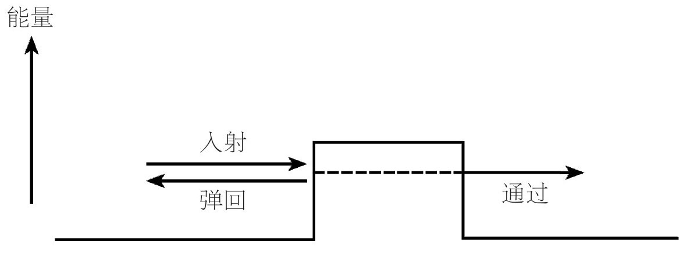
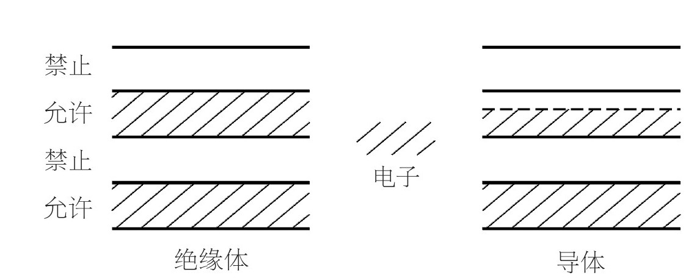
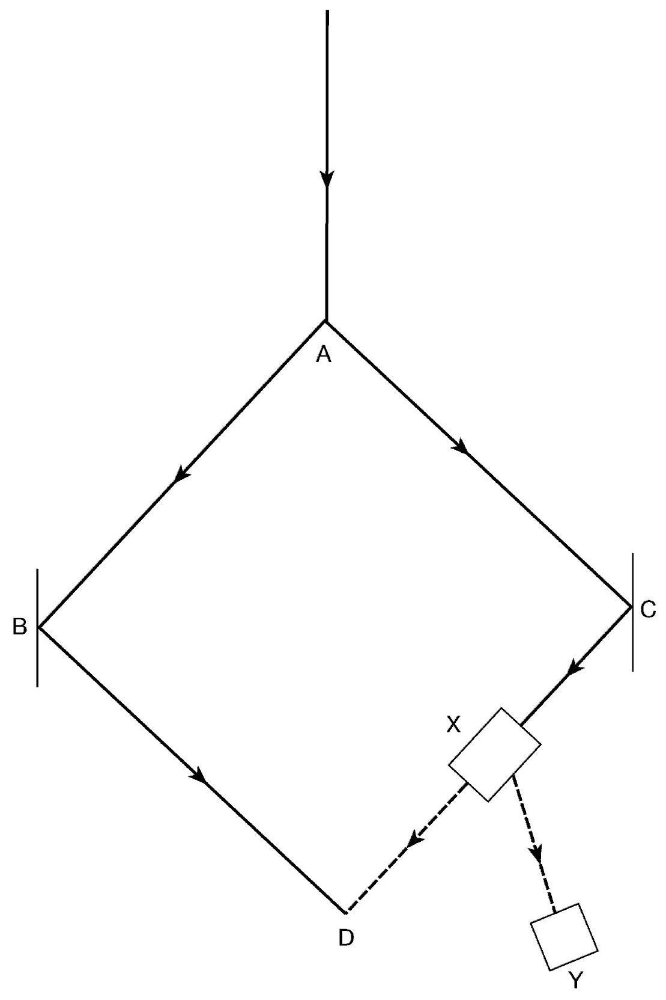

20世纪20年代中期，是基本量子理论被发现的忙乱时期，随后便是一个较长的探索和应用这个新理论内涵的发展时期。我们必须注意到这些进一步发展所带来的一些见解。
海森堡理论中的不确定关系，不仅适用于位置和动量，还适用于时间和能量。尽管大致来说，能量在量子理论中是守恒量——与它在经典理论中一样，但它只是在达到相关不确定性这一点之前才是这样的。换句话说，在量子理论中，“借”一点额外的能量是可能的，前提是能够快速及时地把它还回去。这个比较形象的说法通过详细的计算可以更准确、更有说服力，使某些情形能够在量子力学框架下发生，虽然从能量上来说它们在经典物理中是完全被禁止的。最早被认识到的这类过程的一个例子，是关于通过一个势垒的隧穿几率的。
图7展示了典型的隧穿情形。方形“小山”代表一个区域，进入它就要支付能量费用（称作势能），这个费用等于小山的高度。一个运动粒子随身携带它的运动能量，物理学家称之为动能。在经典物理中，情况是清晰明了的。当一个粒子的动能大于势能时，它将能穿过小山，不过在横穿势垒时速度会适度降低（就像小汽车在爬山时会减慢速度一样）。但是在另一侧，因为动能全部恢复，粒子速度会再次加快。如果这个粒子的动能小于势垒，它就不能穿过“小山”，并且一定会直接反弹回来。

图7 隧穿
在量子力学中，情况就不同了，因为存在着借能量来对抗时间这一奇特的可能性。这就使得在经典物理中动能不足以越过小山的粒子，有时能够穿过势垒，只要它在到达另一边的时候，速度快到能在必要的时限内将能量还回去。这就好像是粒子隧穿过了小山。如果用精确的计算来代替这种形象化叙述方式，我们得出如下结论：动能比势垒高度略低的粒子，既有一定的几率穿过势垒，也有一定的几率被弹回。
有些放射性原子核，从其行为来看好像包含某种叫作α粒子的成分。这些α粒子被原子核力产生的势垒限制在原子核内。只要能穿过原子核力势垒，它们就会有足够的能量在另一边全部逃离。实际上，这类原子核确实呈现出α衰变现象；利用隧穿计算方法对此类α发射的性质给出定量解释，是早期在原子水平上应用量子思想的一个胜利。
在经典物理中，全同粒子（两个同类型粒子，比如两个电子）仍然是可以相互区分的。如果一开始我们就将它们标记为1和2，那么在我们跟踪它们各自的粒子轨迹时，这些区分标记将具有永久的意义。如果在经历一系列复杂的相互作用后电子最终又出现了，原则上，我们仍然能够说出哪个是1、哪个是2。相反，在模糊的难以描述的量子世界，情形就不再是这样了。因为没有连续的可观测轨迹，在相互作用后，我们只能说一个电子出现在这儿，一个电子出现在那儿。任何一开始被选用的标记都不能保留下来。在量子理论中，全同粒子也是不可区分的粒子。
既然标记没有内在意义，它们出现在波函数（ψ）中的具体顺序就一定是无关紧要的。对于全同粒子，态（1，2）必须在物理上与态（2，1）相同。这并不意味着波函数在交换粒子顺序时是严格不变的，因为最终可以看出，从ψ或-ψ得到的物理结果是相同的。这个小小的观点会引出一个大结论，其结果关系到所谓的“统计”，即全同粒子的集体行为。量子力学中，存在两种可能性（分别对应于波函数ψ在交换粒子顺序后两种可能的行为符号）：
玻色统计， 在交换粒子顺序时ψ保持不变的情况下有效。这就是说，波函数在交换两个粒子时是对称的。有这种性质的粒子，叫作玻色子。
费米统计， 在交换顺序时ψ改变符号的情况下有效。这就是说，在交换两个粒子时，波函数是反对称的。有这种性质的粒子，叫作费米子。
这两个选项给出的行为，都不同于在经典情形下可区分粒子的统计。事实证明，量子统计不仅对物质性质的基本理解，而且对新型器件的技术结构都会引发非常重要的结果。（据说，美国GDP的30%产生于以量子为基础的工业：半导体、激光器等。）
电子是费米子。这就意味着两个电子永远不可能被发现处于完全相同的态上。该事实来自以下主张：交换一对电子不会引起系统变化（因为两个态是一样的），但又会引起波函数的符号变化（因为是费米统计）。摆脱这个困境的唯一办法是得出以下结论：两个粒子处于相同态的波函数实际为零。（陈述该观点的另一个方法是指出，两个全同对象的反对称结合无法实现。）该结果称作不相容原理 ，它为理解化学元素周期表中相关元素的循环性提供了基础。事实上，不相容原理是化学足够复杂并最终能够维持生命本身发展的基础。
不相容原理表现在化学上是这样的：在原子内部，电子仅能占据某些特定的能量状态；当然，不相容原理要求任何一个能量状态都不能由多个电子占据。原子稳定的最低能量状态，相当于填满能量最小的可用状态。这些状态可以是物理学家称作“简并”的状态，意思是几个不同的状态恰巧有相同的能量。一组简并态组成一个能级。我们可以在脑海中想象原子最低能量状态是这样形成的：将电子一个接一个地添加到连续的能级上，一直达到原子要求的电子数。一旦一个特定能级的所有状态都被填满，再加入的电子就必须填到下一个更高的原子能级上。如果这个能级也被填满，那么就继续填到下一个能级，以此类推。在一个含有许多电子的原子中，最低能级（它们也叫“壳层”）将是全满的，任何剩余的电子都将部分占据下一个壳层。这些“剩余”的电子距离原子核最远，并且由于这个原因，它们将决定该原子与其他原子的化学相互作用。当原子复杂性提高时（沿着元素周期表横向看），随着壳层一层层被填满，剩余电子数（0，1，2，……）就会循环变化。正是最外层电子数的重复模式，引起了元素周期表中元素化学性质的重复。
与电子相反，光子是玻色子。事实证明，玻色子行为恰恰与费米子行为相反。对于玻色子，没有不相容原理！玻色子喜欢待在相同的状态。它们与南欧人类似，乐意挤在同一节火车车厢中，而费米子则像北欧人，喜欢独自分散在整个列车上。玻色子的这个亲密现象，在最极端形式下，会引起在单个状态上一定程度的聚集，该现象叫作玻色凝聚。这个性质正是激光器等技术设备背后的原理。激光器发射激光的能力源自被称为“相干”的性质，也就是说，组成激光的许多光子都精确处在相同状态，这是玻色统计强烈支持的性质。还有一些与超导（在极低温下电阻消失的现象）相关的效应也依赖于玻色凝聚，其能引起量子性质的宏观可观测结果。（要求低温，是为了阻止热碰撞破坏相干性。）
电子和光子也是带有自旋的粒子。也就是说，它们带有内秉角动量（旋转效应的量度），几乎像是小陀螺一样。对于量子理论采用的自然单位（由普朗克常数定义），电子自旋是1/2，光子自旋是1。结果表明，这个事实证明了一个一般规则：自旋为整数（0，1，……）的粒子始终是玻色子；自旋为半奇数（1/2，3/2，……）的粒子始终是费米子。仅从普通量子力学观点来看，该自旋统计定理 是原因不明的经验规则。然而，沃尔夫冈·泡利（他还提出了不相容原理）发现，当量子理论和狭义相对论结合时，自旋统计定理就是该结合的必然结果。将两个理论放在一起所产生的见解，要比其中任何一个独自所产生的见解更丰富。这就证明，整体大于部分之和。
最容易想到的固体物质形式是晶体，组成晶体的原子以有规则的阵列图案有序排列。一个日常经验意义上的宏观晶体将包含如此多的原子，以至于从量子理论的微观角度来看可以认为它实际上是无限大。将量子力学原理应用到这类系统上，能揭示出新的物理性质，介于独立原子的性质和自由运动的粒子性质之间。我们已经看到，在原子中，可能的电子能量出自一系列离散的确切能级。另一方面，自由运动的电子可以具有任意大小的正能量，对应于它真实运动的动能。晶体中电子的能量取值，是这两个极端的一种妥协。可取的能量值处于一系列能带中。在带内，电子能量可以连续取值；在带间，则根本没有能级可供电子占据。归纳起来，晶体中电子的能量取值对应于一系列交替出现的允许和禁止的数值范围。
能带结构的存在，为理解晶体固体的电学性质提供了基础。诱发固体中电子的运动，就能产生电流。如果一个晶体的最高能带是完全填满的，电子状态的这种改变就会要求电子越过带隙激发到上面的带上。该跃迁对每个被激发的电子都要求输入大量的能量。由于这是很难实现的，能带完全填满的晶体将表现为绝缘体。诱发它的电子运动是非常困难的。然而，如果一个晶体的最高能带只是部分填充的，激发它的电子运动将会很简单，因为只需要输入一小部分能量就能把电子移动到一个能量稍高的可用态上。这样的晶体将表现为电导体。

图8 能带结构
约翰·阿奇博尔德·惠勒在被他称为“延迟选择实验”的讨论中，为叠加原理的奇怪含义提供了新的见解。图9给出了一种可能的结构。一束窄光束在A处分裂为两束子光束，它们分别被B和C处的镜子反射，进而在D处又汇合在一起。在D处，两条路径间的相位差（波已经不再同步）会形成干涉图样。可以考虑一束非常弱的初始光，弱到在任何时刻仅有一个光子穿过设备。那么，D处的干涉效应就可以理解为产生于两个叠加态（左边路径和右边路径）之间的自干涉。（请与第二章双缝实验的讨论进行比较。）如果改动装置，在C和D之间插入仪器X，惠勒讨论的新性质就出现了。X是一个开关，可以让光子通过，也可以使光子转移到探测器Y。如果开关被设置成通过，实验结果和以前一样，在D处有干涉图样。如果开关被设置成转移，并且探测器Y记录了一个光子，在D处就没有干涉图样，因为探测器Y接收到光子被偏移，说明光子一定是走了右边的路径。惠勒指出了一个奇怪的事实：可以在光子飞过A之后，设置开关X。在开关被设置好之前，光子在某种意义上都支持两种选择：左边路径和右边路径都走，和仅走它们中的一个。实际上，物理学家已经沿着这些路线进行了一些巧妙的实验。

图9 延迟选择实验
理查德·费曼发现了一个独特的方法来重建量子理论。这个理论重建产生的预测与传统方法相同，但是它提供了一个不同于以往的图形方法来思考这些结果是如何出现的。
经典物理呈现给我们清晰的轨迹，即连接出发点A和终点B的唯一运动路径。传统上，该路径可以通过求解著名的牛顿力学方程来得出。在18世纪，人们发现了一个不同但等价的方法来确定经过的实际路径。该方法将实际路径描述为连接A和B的轨迹，在各种可能的路径中，该轨迹使某特定动力学量取最小值。这个量被称为“作用量”，在这儿我们不关心它的精确定义。最小作用量原理（后来自然而然被这样称呼）与光线性质类似：它们取两点之间耗时最短的路径。（如果没有折射，路径就是直线，但是在折射介质中，最短时间原理将导致我们熟知的光线弯曲，就像棍子在一杯水中出现的弯曲一样。）
因为量子过程的模糊和难以描画，量子粒子并没有明确的轨迹。费曼建议，应该将量子粒子从A到B的运动，想象为沿着所有可能的路径 ，包括直的或弯的，快的或慢的。从这个观点出发，传统思想中的波函数就来自所有这些可能路径的贡献之和，这就引出了量子理论的“历史求和”描述。
如何构造这个巨大求和中的项？由于其细节技术性太强，此处不做探究。事实证明，一个给定路径的贡献与该路径的作用量有关，而作用量是以普朗克常数划分的。（作用量与普朗克常数h的物理单位相同，因此它们的比是一个纯数，与我们选择用来测量物理量的单位无关。）这些不同路径所呈现的实际形式是，由于相邻路径的贡献符号快速振荡（更准确地说，是相位快速振荡），它们的贡献趋于相互抵消。如果考虑的系统作用量相对于h非常大，那么只有最小作用量路径贡献较多（因为事实证明，在那条路径附近振荡是最小的，所以抵消效应也是最小的）。这个观点提供了一个简单的方法来理解为什么大系统表现出经典行为，遵循着最小作用量路径。
以精确而可计算的方式来阐述这些思想绝非易事。有人可能很快就想到，路径有多种可能，而其变化区间并不是一个简单集合，能够在其上求和。尽管如此，历史求和方法产生了两个重要结果。其一是，它让费曼发现了一个容易驾驭得多的计算技术，现在普遍称其为“费曼积分”，它是过去50年里提供给物理学家的最有用的量子计算方法。它产生一个物理图像，其中的相互作用源自能量和动量交换，这些能量和动量由所谓的“虚粒子”携带。使用形容词“虚”是因为，这些粒子不能在过程的初态和终态中出现，是中间“粒子”。它们不被强制拥有物理质量，但是需要对所有可能的质量值进行求和。
历史求和方法的另一个优点是，对于有些相当微妙和复杂的量子系统，与传统的方法相比，历史求和能提供更加清晰的方法来阐述问题。
环境中辐射普遍存在，其效应能引起退相干，它们具有的意义超出了与测量问题的部分相关性。不久前的一个重要进展是，人们认识到它们也与我们应该怎样思考所谓混沌系统的量子力学有关。
自然界中存在的固有的不可预测性，并不仅仅来自量子过程。大约40年前，人们认识到即使在牛顿物理学中，也有许多系统对微小的扰动效应极其敏感，进而使它们未来的行为无法被精确预测。这个发现令大多数物理学家非常惊讶。这些混沌系统（对它们的称呼）对细节的敏感，很快达到海森堡不确定性水平或以下。但是，用量子力学观点来处理它们——一个叫作量子混沌学 的课题——被证明是有问题的。
困惑的原因如下：混沌系统有一个行为，它的几何特征对应于著名的分形（最熟悉的例子是曼德尔布罗特集，该集是许多迷幻海报的主题）。分形是某种被称作自相似的东西，也就是说，不论在何种尺度上查看，它们看起来本质是相同的（锯齿由锯齿组成，……，一直这样下去）。因此，分形没有天生的特征尺度。然而另一方面，量子系统却有天生的特征尺度，由普朗克常数设定。因此，混沌理论和量子理论并不能顺利地相互适应。
由此产生的失配将导致所谓的“混沌的量子抑制”：当混沌系统开始在量子水平上依赖细节时，就改变了自己的行为。对物理学家来说，这就导致了另一个问题，该问题最严重的形态源自对土星的第十六颗卫星——土卫七的思考。这个马铃薯形状的岩石块，跟纽约差不多大小，以混沌的方式在翻滚。如果我们将量子抑制概念应用到土卫七上，预期结果将会惊人地有效，尽管它尺寸极大。事实上，基于这个计算，混沌运动最多仅能持续约37年。实际情况是，天文学家观测土卫七的时间比37年短得多，但是没人预期它那怪诞的翻滚行为会很快结束。乍一看，我们面临着一个严重问题。然而，考虑退相干会为我们解决这个问题。退相干存在一个倾向，即驱动事物朝着与经典情形更相似的方向发展，该倾向有一个效应，能反过来抑制混沌的量子抑制。我们还是能够满怀信心地预期，土卫七会继续翻滚很长一段时间。
退相干引起的另一个相当类似的效应是量子芝诺效应 。衰变带来的放射性原子核，会被原子核与环境光子相互作用引发的“迷你观察”强制返回到初始状态。持续不断回到起点具有抑制衰变的作用，该现象已经在实验中被观测到。这个效应是根据古希腊哲学家芝诺命名的，他曾思考一支飞行的箭，认为在现在这个时刻观测这支箭，其处于一个特定的固定位置，所以他相信箭不可能真正运动。
这些现象清楚地说明了量子理论和它的经典界限之间的关系是微妙的，涉及不能简单地用“大”和“小”来划分的交错效应。
我们关于自旋和统计理论的讨论已经表明，量子理论和狭义相对论的结合会得出内容更加丰富的统一理论。在不断地构想如何结合这两个理论的过程中，第一个成功的方程是电子的相对论方程，由保罗·狄拉克在1928年发现（数学附录12）。它的数学细节技术性太强，无法展现在本类书中，但是我们必须注意到，这个进展给我们带来两个意想不到的重要结果。
仅通过思考量子理论和相对论不变性需求，狄拉克就创造了他的方程。因此，当他发现这个方程对电子电磁性质的预言与以往不同时，那一定是个巨大的惊喜。人们以往将电子看作微型的带电陀螺，狄拉克方程预言的是在此基础上得到的电子磁相互作用强度的两倍。人们已经从经验上知道事实就是这样，但是没人能理解这明显反常的行为为什么会这样。
第二个结果甚至更加重要，源自狄拉克聪明地将失败的威胁转变成欢欣鼓舞的胜利。从事实情况来看，狄拉克方程有一个显而易见的缺陷。它允许对应于真实电子行为所需要的正能态，但是它也允许负能态，后者几乎不产生任何物理意义。不过，它们不能被简单地丢弃，因为量子力学原理必然会允许从物理上可接受的正能态到负能态的跃迁所带来的灾难性后果。（这将是一个物理灾难，因为往负能态上的跃迁需要无限多的正能量来平衡，进而导致一种失控的永动机。）有相当长一段时间，这是一个非常令人尴尬的难题。但是随后狄拉克认识到，电子的费米统计可能会提供一个方法来走出困境。怀着巨大的勇气，他假设所有负能态都已经被占据。那么，不相容原理将阻止任何从正能态朝向它们的跃迁。人们以前认为是空的空间（真空）实际上被负能电子“海”填满了！
听起来，这确实是个奇怪的画面。其实，后来证明可以用一个新方法来表述这个理论。新方法保留了人们想要的结果，形式上没有这么生动形象，不过也少了些怪诞。同时，用负能海的概念来进行研究让狄拉克有了一个至关重要的发现。如果能提供足够的能量，比如借助一个能量很高的光子，将有可能从负能海中弹出一个负能电子，使之转变为普通的正能电子。那么，如何看待在这个过程中留在负能海中的“空穴”呢？负能缺失和正能出现是一样的（两个减号就生成一个加号），因此空穴将表现为一个正能粒子。但是，负电荷缺失和正电荷出现也是一样的，所以“空穴粒子”将是带正电的，这与负电荷电子相反。
在20世纪30年代，相对于随后到来的自由思考，基本粒子物理学家的思想还是相当保守的。他们根本不喜欢那种认为存在某些未知类型新粒子的想法。因此，人们起初认为，狄拉克谈论的这种正粒子，可能不过就是众所周知的带正电荷的质子。然而，人们很快就认识到，空穴质量必须和电子质量相同，而质子的质量要大很多。因此，唯一可接受的解释，就是有点不情愿地预测它是一个全新的粒子。很快该粒子就被命名为正电子，它与电子质量相同，但是带有正电荷。它的存在也很快就被实验所证实，因为在宇宙射线中发现了正电子。（其实，这些例子很早就被观察到了，只不过没有像现在这样被认识。实验者们很难看到他们并未真正寻找的东西。）
人们开始认识到，电子——正电子孪生对是自然界中普遍存在的行为的一个特殊实例。自然界中，存在物质（比如电子）和带相反电荷的反物质 （比如正电子）。前缀“反”用得很恰当，因为一个电子和一个正电子能够相互湮灭，在能量爆炸中消失。（以传统方式来说，电子填上了海中的空穴，释放的能量随后被辐射出去。相反，如我们所看到的那样，高能光子能够从海中驱出一个电子，在后面留下一个空穴，从而制造一个力电子——正电子对。）
狄拉克方程硕果累累，既解释了磁性质，又发现了反物质，这两个主题绝非狄拉克构造该方程的初衷。狄拉克方程卓有成效的历史，是一个真正基础性的科学思想所能体现的长期价值的杰出代表。正是这异常丰富的成果，使物理学家相信他们确实“弄清了一些事情”。与某些科学哲学家和科学社会学家的意见相反，他们并不仅仅是在默契地同意以特别的方式来看待事物。他们还在探索物理世界事实上是什么样的。
当狄拉克将量子力学原理应用在电磁场而非粒子上时，他做出了另一个基础性发现。该发现带来了第一个为人们所知的量子场论范例。事后来看，迈出这一步技术上并不太难。粒子和场的基本差异是，前者自由度（其状态能够独立改变的方式）数有限，而后者自由度数无限。已经有一些众所周知的数学技术可以用来处理这个差异。
量子场论被证明是非常有趣的，并且为我们思考波粒二象性提供了一个最富启发性的方法。场是在空间和时间中延伸的实体，因此有一个内在的波动特征。把量子理论应用到场上，将导致场的物理量（比如能量和动量）以离散的、可数的波包（量子）形式出现。但是，这种可数性正是我们用来与粒子行为联系的性质。因此，研究一个量子场，就是在调查和理解以尽可能清晰的方式显示出波动性和粒子性的对象。这有点像你正对哺乳动物会生蛋感到困惑，然后就拿一只鸭嘴兽给你看一样。真实的例子总是最有教益。事实证明，在量子场论中，表现出波动性质（从技术上，有明确相位）的态是那些包含无限个 粒子的态。后面这个性质是一种自然的可能性，因为量子理论的叠加原理允许粒子数不同的状态间的结合。在经典理论中，这种选择是不可能的，因为那里只能依序看一看、数一数真实存在的粒子数。
量子场论中，真空也有不同寻常的性质，并且特别重要。当然，真空是最低能量状态，其中不存在对应于粒子的激发。尽管在这个意义上那里没有任何东西，但是在量子场论中，这并不意味着那里没有事情发生。原因如下：被称作傅立叶分析的标准数学技术，允许我们将场等效为无限个谐振子的集合。每一个谐振子都有与它相关的特定频率，其动力学上的表现就像一个按照给定频率振荡的钟摆。场的真空状态，就是指所有这些“钟摆”都处在它们最低的能量状态。对于一个经典钟摆，就是指摆锤静止在底部的状态。这个情况下，确实没有任何事情发生。然而，量子力学并不允许如此完美的平静。海森堡不允许“摆锤”同时有明确的位置（在底部）和明确的动量（静止）。相反，量子钟摆必须微弱地运动，即使在它的最低能量状态（靠近底部并近乎静止，但没有完全停下）。由此产生的量子颤动叫零点运动。把这些思想多次应用到形成量子场的无限个振子上，暗示量子场的真空是一个嗡嗡活动的蜂房。涨落持续发生，在这个过程中“粒子”瞬时出现，又瞬时消失。量子真空更像是充满物质的空间，而不是空的空间。
当物理学家开始将量子场论应用到涉及场间相互作用的情形时，他们遇到了困难。对于本来应该是有限的物理量，无限数量的自由度往往会产生无限多的答案。这种情况发生的一个重要方式是通过与不停息的真空涨落相互作用。最终人们发现了一个方法，可以从无意义中创造出意义。某类场论（称作重整化 理论）仅产生有限类型的无限，单与粒子质量和它们相互作用的强度有关。仅剔除这些无限项，并用相关物理量有限的测量值代替它们——该过程就是定义有意义结果的程序，虽然它不是纯数学程序。事实也表明，它提供的有限结果与实验惊人地一致。多数物理学家对此实用主义的成功感到非常高兴。但是，狄拉克自己从来不这样。他强烈不赞成对正式的无限量采取的可疑花招。
今天，所有基本粒子理论（如物质的夸克理论）都是量子场论。粒子被认为是潜在场的能量激发。（合适的场论最终也提供了正确的方法去处理负能电子“海”的困难。）
近来，人们对是否能够将叠加原理作为大幅增强计算能力的一个方法表现出极大的兴趣。
传统计算是基于二进制操作的组合，形式上的表述是0和1的逻辑组合，在硬件上则是通过开关的开或关实现。当然，在经典设备中，开关是相互排斥的两种可能。一个开关，要么是明确打开，要么是明确关闭。然而，在量子世界，开关可以处在这两个经典可能状态的叠加态上。一系列这种叠加将对应于一种全新的并行处理。保持如此多计算小球同时在空中的能力，在原则上代表计算能力的增强，额外元素的增加将使计算能力呈指数增长，而在传统情况下它是呈线性增长的。许多在当前机器上不可行的计算任务，如解码或大数因子分解，都将变得可行。
这些可能性令人兴奋。（支持者喜欢用多世界的措辞来谈论它们，似乎数据处理将在平行宇宙中发生，但看来实际上只是叠加原理本身为量子计算的可行性提供了基础。）然而，真正的实施将毫无疑问是件棘手的事，还有大量问题尚待解决。其中许多问题都围绕在如何稳定保存叠加态上。退相干现象表明，将量子计算机从有害的环境干扰中隔离出来是多么困难。对于量子计算，人们正在进行严肃的技术和市场考察，但是作为一个有效的过程，目前它还只是支持者眼中的一线微光。